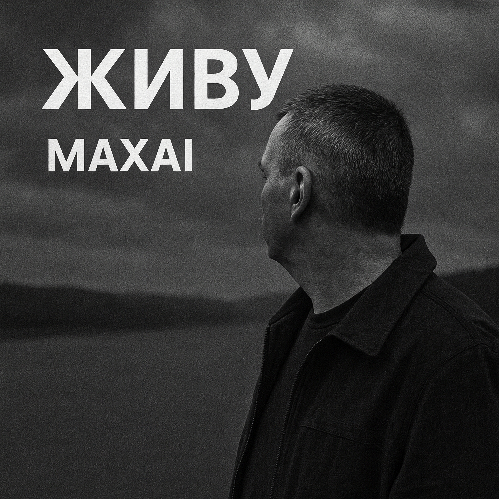

09.10.2025
Прожито больше половины жизни.
И дети выросли уже давно.
Но почему-то в мыслях столько грусти,
Как будто, мимо важное прошло.
Я всё ещё живу — а значит, рано ставить точку,
Пускай внутри не греет больше свет.
Ещё горит во мне последняя надежда —
И я иду туда, где есть ответ.
Как будто, что-то в этой жизни не успел я,
Как будто, что-то сделал я не так.
Так хочется, чтобы душа огнём горела,
Но чувствую лишь пустоту и мрак.
Я слишком долго шёл сквозь тишину и стены,
Скрывая боль за тенью сильных фраз.
Но всё же верю — даже в час последний,
Надежда не погаснет — не сейчас.
Я всё ещё живу — а значит, рано ставить точку,
Пускай внутри не греет больше свет.
Ещё горит во мне последняя надежда —
И я иду туда, где есть ответ.
И всё ещё мечтаю — всё изменится,
Надеюсь — я смогу счастливым быть.
Быть может, и во мне душа засветится.
Быть может, даже научусь любить!
Пускай не всё сложилось, как хотелось,
Пускай не каждый шаг вёл в вышину.
Я верю: свет, однажды разгоревшись,
Сумеет вновь разжечь во мне весну.
Я всё ещё живу — и в этом вся отрада,
Пускай внутри покоя больше нет.
Пока ещё внутри живёт надежда —
Я всё равно иду… туда, где ждёт ответ.
До прослушивания: Ощущение прожитых лет, усталость, лёгкая грусть.
После прослушивания: Тихая вера, надежда на внутренний свет, желание не сдаваться и двигаться дальше.
«Живу» — песня о том, как важно не терять надежду, несмотря на возраст, потери или разочарования. Внутренний свет может угасать, но всегда есть шанс разжечь его снова.
Куплеты и повторяющийся рефрен создают ощущение жизненного пути и внутреннего поиска, возвращаясь к мысли о надежде и движении вперёд.
Исполнитель — взрослый, опытный человек, говорящий честно о своих чувствах и поисках. Тон спокойный, открытый, без пафоса.